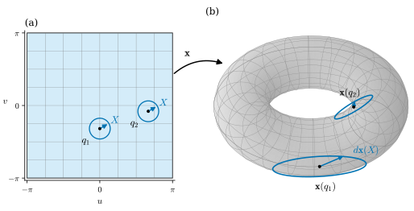
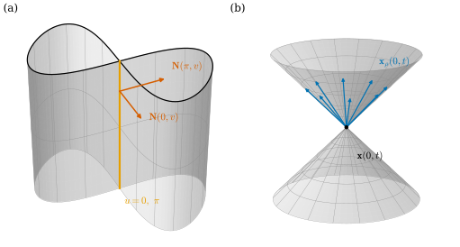
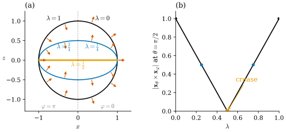

38.1 Parametrized Surfaces and the Differential
Goals
- parametrized surface \(\mathbf{x}\colon U \to \R^3\)의 differential \(d\mathbf{x}\)를 \(\R^3\)-valued 1-form, Jacobian matrix, directional derivative라는 세 관점으로 읽고 계산할 수 있다.
- immersion의 조건 “\(d\mathbf{x}\)가 injective” ⇔ \(\mathbf{x}_u\times\mathbf{x}_v \neq 0\)을 증명하고, immersion이 국소적으로 injective임을 보일 수 있다.
- immersion과 embedding을 예와 비예로 구분할 수 있다. immersion은 점 근처의 조건이고 embedding은 전체의 조건이다.
- regular homotopy를 surface에 옮기고, 원과 달리 sphere는 immersion을 유지하며 안팎을 뒤집을 수 있다는 사실(sphere eversion)을 정확히 진술할 수 있다.
Prerequisites
- vector-valued form Definition 35.5.10, map의 differential Example 35.5.11, self-wedge Proposition 35.5.14.
- Chapter 37: plane curve의 differential과 immersion(Section 37.1), regular homotopy Definition 37.2.7, Theorem 37.2.11, Corollary 37.2.12.
- Jacobian matrix Definition 2.1.10, directional derivative Definition 2.1.9, chain rule Theorem 2.2.1, inverse function theorem Theorem 2.3.5, cross product Theorem 1.6.16.
Motivation
Chapter 37은 곡선을 map \(\gamma\colon I \to \R^2\)로 보고, 그 differential \(d\gamma\)가 parameter 방향을 속도 vector로 보낸다는 것에서 출발했다. \(d\gamma\)가 어디서나 injective인 곡선이 regular curve, 곧 곡선의 immersion이었고, 다각형에서는 edge vector가 그 discrete 판이었다(Proposition 37.4.1). 전체 모양에 대해서는 turning number가 regular homotopy에서 변하지 않아서, 평면에서 원의 방향은 뒤집을 수 없었다(Corollary 37.2.12).
이 장은 같은 이야기를 surface에서 한다. 정의역이 2차원이 되면 바뀌는 것이 셋 있다. 첫째, 한 점에서 움직일 수 있는 방향이 직선이 아니라 평면을 이루므로, \(d\mathbf{x}\)는 vector 하나가 아니라 평면 전체를 \(\R^3\)으로 보낸다. 둘째, “\(\gamma' \neq 0\)”에 해당하는 조건은 “\(d\mathbf{x}\)가 rank 2”가 된다. 셋째, 전체 모양에 관한 질문이 달라진다. 원은 평면에서 뒤집을 수 없었는데, sphere는 \(\R^3\)에서 뒤집을 수 있는가?
이 절은 smooth 쪽의 출발점이다. Section 38.2에서 \(d\mathbf{x}\)로 길이와 각을 재고, Section 38.3에서 normal을 정한 뒤, Section 38.4부터 같은 것을 triangle mesh 위에서 정의한다. 그래서 정의를 고를 때 “mesh에서도 그대로 말할 수 있는가”를 늘 함께 본다.
Parametrized Surfaces
surface를 다루는 방법은 여럿이다. Track 3은 \(\R^3\)의 부분집합 \(S\)를 먼저 정하고, 그것을 덮는 parametrization을 붙인다(Definition 6.1.1). 강의 슬라이드와 노트는 map을 먼저 본다 [Cr §3.1]. surface를 점들의 집합으로 보기 전에, 평면 영역의 각 점에 \(\R^3\)의 위치를 하나씩 정해 주는 규칙으로 보는 것이다. 지도책의 한 쪽은 지구의 한 부분에 평면 좌표를 주는데, 그 대응을 거꾸로 읽어 좌표에서 지구 위의 점으로 가는 것이 이런 map이다. mesh도 vertex에 좌표를 주는 map이므로(Section 38.4) 이 관점이 discrete 판과 잘 맞는다.
Definition 38.1.1 (parametrized surface). \(U \subseteq \R^2\)가 open set이고 \(\mathbf{x}\colon U \to \R^3\)이 smooth map일 때, \(\mathbf{x}\)를 parametrized surface(매개곡면)라 하고 \(\mathbf{x}(U)\)를 그 image라 한다. \(U\)의 좌표는 \((u, v)\)로 쓰고 \(\mathbf{x}_u = \partial\mathbf{x}/\partial u\), \(\mathbf{x}_v = \partial\mathbf{x}/\partial v\)로 쓴다. \(h\colon \tilde U \to U\)가 open set 사이의 diffeomorphism이면 \(\mathbf{x}\circ h\)를 \(\mathbf{x}\)의 reparametrization(재매개화, 곡선의 경우는 Definition 4.3.1)이라 하고, \(\det Dh \gt 0\)이면 orientation-preserving이라 한다.
image는 같은데 map이 다른 경우가 흔하다(아래 Example 38.1.2(d)). 그래서 두 parametrized surface가 같은 surface를 나타내는지 물을 때는 map을 그대로 비교하지 말고 reparametrization만큼의 차이를 허용해야 한다. 강의 슬라이드는 이 자유도를 “reparametrization symmetry”라 부르고, 응용에서 겪는 어려움의 하나로 든다 [CMU-DDG L12]. 이 정의에는 regularity 조건이 없다. Track 3의 parametrization(Definition 6.1.1)은 여기에 immersion 조건(아래 Definition 38.1.6)과 image 위로의 homeomorphism 조건을 더한 것이다.
Example 38.1.2 (the running examples as parametrized surfaces). running example(Notation and Conventions)의 parametrization을 모두 \(\R^2\) 전체에서 정의된 smooth map으로 본다.
- (a) sphere \(\mathbf{x}(\theta, \varphi)\) \(= (r\sin\theta\cos\varphi,\ r\sin\theta\sin\varphi,\ r\cos\theta)\). image는 \(S^2(r)\)이고, 정의역을 \((0, \pi)\times(0, 2\pi)\)로 줄이면 반원 하나를 뺀 부분이다(Example 6.1.7).
- (b) torus of revolution \(\mathbf{x}(u, v) = ((R + r\cos u)\cos v,\) \((R + r\cos u)\sin v,\ r\sin u)\), 이 장의 수치는 \((R, r) = (2, 0.8)\)이다. \(u\)와 \(v\) 모두 주기 \(2\pi\)이므로 \(\R^2\)를 \(T_{R,r}\) 위에 무한히 여러 번 감는다.
- (c) cylinder \(\mathbf{x}(u, v) = (r\cos u,\ r\sin u,\ v)\)와 saddle의 graph parametrization \(\mathbf{x}(u, v) = (u,\ v,\ u^2 - v^2)\).
- (d) saddle의 polar reparametrization. \(h(\rho, t) = (\rho\cos t, \rho\sin t)\)는 \((0, \infty)\times(-\pi, \pi)\)에서 원점과 음의 \(u\)축을 뺀 영역으로 가는 diffeomorphism이고 \(\det Dh = \rho \gt 0\)이다. \(\mathbf{y} = \mathbf{x}\circ h\)는 \(\mathbf{y}(\rho, t) = (\rho\cos t,\ \rho\sin t,\ \rho^2\cos 2t)\)로, 같은 saddle의 일부를 다른 좌표로 나타낸다(\(u^2 - v^2 = \rho^2\cos 2t\)).
Non-example 38.1.3 (a parametrized surface whose image is a curve). helix \(\gamma(s) = (\cos s, \sin s, 0.3s)\)로 \(\mathbf{x}(u, v) = \gamma(u + v)\)를 만들면 smooth map이므로 Definition 38.1.1의 의미로는 parametrized surface다. 그러나 image는 helix, 곧 곡선이다. \(\mathbf{x}_u = \mathbf{x}_v = \gamma'(u + v)\)이므로 두 방향이 같은 vector로 가고, 평면의 한 방향(\(\partial_u - \partial_v\))이 통째로 사라진다. map이 smooth라는 것만으로는 image가 2차원이라는 보장이 없다. 이것을 막는 조건이 아래의 immersion이다.
The Differential
parametrized surface의 differential은 Chapter 35에서 이미 정의했다. \(\mathbf{x}\)를 \(U\) 위의 \(\R^3\)-valued 0-form으로 보면 그 exterior derivative가 \(\R^3\)-valued 1-form
이다(Example 35.5.11(a)). Equation (38.1.1)은 점 \(q \in U\)와 vector \(X = (X^1, X^2) \in \R^2\)에 대하여 \(d\mathbf{x}_q(X) = X^1\mathbf{x}_u(q) + X^2\mathbf{x}_v(q)\)라는 뜻이다. \(X\)는 parameter 평면의 화살표이고 \(d\mathbf{x}_q(X)\)는 공간의 화살표다. 곧 \(d\mathbf{x}_q\)는 \(q\)에서 출발하는 parameter 화살표마다 그것이 surface 위에서 어떤 화살표가 되는지를 알려 주는 linear map이고 [Cr §3.1], 아래 Figure 38.1.1에서 작은 원이 타원으로 바뀌는 것이 그 모습이다.
Proposition 38.1.4 (three readings of the differential). \(\mathbf{x}\colon U \to \R^3\)이 smooth이고 \(q \in U\), \(X \in \R^2\)라 하자.
- (a) (Jacobian) \(d\mathbf{x}_q(X) = D\mathbf{x}(q)\,X\)이다. 여기서 \(D\mathbf{x}(q)\)는 열이 \(\mathbf{x}_u(q), \mathbf{x}_v(q)\)인 \(3\times 2\) Jacobian matrix다.
- (b) (directional derivative) \(d\mathbf{x}_q(X) = \lim_{h\to 0}\dfrac{\mathbf{x}(q + hX) - \mathbf{x}(q)}{h}\)이다.
- (c) (velocity) \(c\colon (-\varepsilon, \varepsilon) \to U\)가 \(c(0) = q\), \(c'(0) = X\)인 smooth curve이면 \((\mathbf{x}\circ c)'(0) = d\mathbf{x}_q(X)\)이다. 곧 \(d\mathbf{x}_q(X)\)는 \(X\)를 속도로 하는 parameter 곡선의 image가 갖는 속도다.
- (d) (reparametrization) \(h\colon \tilde U \to U\)가 smooth이면 \(d(\mathbf{x}\circ h)_p = d\mathbf{x}_{h(p)}\circ Dh(p)\)이고, \(h\)가 diffeomorphism이면 \(d(\mathbf{x}\circ h)_p\)와 \(d\mathbf{x}_{h(p)}\)의 image는 \(\R^3\)의 같은 subspace다.
Proof. (a) (38.1.1)에서 \(d\mathbf{x}_q(X) = X^1\mathbf{x}_u + X^2\mathbf{x}_v\)이고, 이것이 Jacobian matrix와 \(X\)의 곱이다(Theorem 2.1.11). (b) smooth map은 differentiable이므로 directional derivative가 total derivative를 \(X\)에 쓴 것과 같다(Definition 2.1.9, Corollary 2.2.2). (c) chain rule(Theorem 2.2.1)에서 \((\mathbf{x}\circ c)'(0) = D\mathbf{x}(q)\,c'(0)\)이고 (a)를 쓴다. (d) chain rule에서 \(D(\mathbf{x}\circ h)(p) = D\mathbf{x}(h(p))\,Dh(p)\)이다. \(h\)가 diffeomorphism이면 \(Dh(p)\)가 invertible(Proposition 2.3.4)이므로 \(D\mathbf{x}(h(p))\,Dh(p)\)와 \(D\mathbf{x}(h(p))\)의 column space가 같다.
(a)는 계산하는 법이고, (b)와 (c)는 뜻이다. (d)는 parameter를 바꿔도 \(d\mathbf{x}\)가 만드는 평면은 그대로라는 것이다. Track 3은 이 평면을 tangent plane이라 부른다(Proposition 6.2.4).
Figure 38.1.1로 \(d\mathbf{x}\)가 하는 일을 보자. 왼쪽 (a)는 torus of revolution의 parameter 정사각형이고, 두 점 \(q_1 = (0, -1)\)과 \(q_2 = (2\pi/3, -0.25)\)에 반지름 \(0.45\)인 원이 있다. 원 위의 점은 길이가 같고 방향만 다른 vector \(X\)들의 끝점이다. 오른쪽 (b)에서 그 원들의 image \(\mathbf{x}(q) + d\mathbf{x}_q(X)\)를 보면 원이 아니라 타원이다. \(q_1\)은 바깥 적도(\(u = 0\))에 있어서 \(\mathbf{x}_v\) 방향(수평 원 방향)으로 \(R + r = 2.8\)배, \(\mathbf{x}_u\) 방향(관을 도는 방향)으로 \(r = 0.8\)배 늘어난다. \(q_2\)는 관의 위쪽 안쪽(\(u = 2\pi/3\))이어서 수평 방향의 배율이 \(R + r\cos u = 1.6\)으로 줄어든다. 파란 화살표 하나(\(X\)를 \(30^\circ\) 방향으로 잡은 것)를 따라가면, \(X\)와 \(d\mathbf{x}(X)\)의 방향도 같지 않다는 것이 보인다. 이 타원의 모양이 Section 38.2의 induced metric이다.

Example 38.1.5 (differentials of the running examples). (a) torus of revolution에서 Example 7.1.5의 partial derivative를 쓰면
이다. 두 coefficient vector는 서로 수직이고 길이가 \(r\)과 \(R + r\cos u\)다. 따라서 \(X = \cos\alpha\,\partial_u + \sin\alpha\,\partial_v\)이면 \(\abs{d\mathbf{x}(X)}^2\) \(= r^2\cos^2\alpha + (R + r\cos u)^2\sin^2\alpha\)이고, 단위원의 image는 반지름이 \(r\)과 \(R + r\cos u\)인 타원이다(Figure 38.1.1). 예를 들어 \(q = (\pi/2, 0)\)(관의 꼭대기)에서 \(d\mathbf{x}(\partial_u + \partial_v) = (-0.8, 0, 0) + (0, 2, 0)\) \(= (-0.8, 2, 0)\)이다.
(b) sphere에서는 \(d\mathbf{x} = \mathbf{x}_\theta\,d\theta + \mathbf{x}_\varphi\,d\varphi\)이고 \(\abs{\mathbf{x}_\theta} = r\), \(\abs{\mathbf{x}_\varphi} = r\sin\theta\)이다(Example 35.5.11(b)). \(\theta\)가 \(0\)으로 가면 \(\varphi\) 방향의 배율이 \(0\)으로 줄어든다.
(c) saddle의 graph parametrization에서는 \(\mathbf{x}_u = (1, 0, 2u)\), \(\mathbf{x}_v = (0, 1, -2v)\)이다. 점 \(q = (0.5, -0.4)\)에서 \(d\mathbf{x}_q(X) = (X^1,\ X^2,\ X^1 + 0.8X^2)\)이므로 \(d\mathbf{x}_q\)는 \(X\)를 수평으로는 그대로 두고 높이 \(X^1 + 0.8X^2\)를 덧붙인다.
Verification: verify/v-38-1-parametrized-surfaces.py
Immersions
Non-example 38.1.3에서는 \(d\mathbf{x}\)가 평면의 한 방향을 \(0\)으로 보냈다. 곡선에서 \(\gamma' = 0\)인 점이 문제였던 것처럼, surface에서는 \(d\mathbf{x}\)의 kernel이 문제다.
Definition 38.1.6 (immersion). parametrized surface \(\mathbf{x}\colon U \to \R^3\)이 모든 \(q \in U\)에서 \(d\mathbf{x}_q\colon \R^2 \to \R^3\)이 injective이면, 곧 \(d\mathbf{x}_q(X) = 0\)이 \(X = 0\)일 때뿐이면, \(\mathbf{x}\)를 immersion(몰입)이라 한다. 일반 manifold 사이의 immersion은 Section 14.1에서 다룬다.
Proposition 38.1.7 (criteria for an immersion). \(\mathbf{x}\colon U \to \R^3\)이 smooth이고 \(q \in U\)이면 다음은 서로 동치다.
- (i) \(d\mathbf{x}_q\)가 injective이다.
- (ii) \(\mathbf{x}_u(q)\)와 \(\mathbf{x}_v(q)\)가 linearly independent이다(곧 \(D\mathbf{x}(q)\)의 rank가 \(2\)다).
- (iii) \(\mathbf{x}_u(q)\times\mathbf{x}_v(q) \neq 0\)이다.
- (iv) \(\R^3\)-valued 2-form \(d\mathbf{x}\wedge d\mathbf{x}\)가 \(q\)에서 \(0\)이 아니다.
Proof idea: \(d\mathbf{x}_q\)의 kernel은 \(\mathbf{x}_u\)와 \(\mathbf{x}_v\)의 linear relation이고, cross product는 두 vector가 평행할 때만 \(0\)이다.
Proof. (i)⇔(ii): \(d\mathbf{x}_q(a, b) = a\mathbf{x}_u + b\mathbf{x}_v\)이므로 kernel이 \(\{0\}\)인 것과 \(a\mathbf{x}_u + b\mathbf{x}_v = 0 \Rightarrow a = b = 0\)인 것은 같은 말이다. (ii)⇔(iii): \(\abs{\mathbf{x}_u\times\mathbf{x}_v}\)는 \(\mathbf{x}_u, \mathbf{x}_v\)가 펼치는 평행사변형의 넓이이고(Theorem 1.6.16), 그것이 \(0\)인 것은 두 vector가 linearly dependent인 것과 같다. (iii)⇔(iv): (35.5.6)에서 \(d\mathbf{x}\wedge d\mathbf{x} = 2\,\mathbf{x}_u\times\mathbf{x}_v\,du\wedge dv\)이고, \(du\wedge dv\)는 어디서나 \(0\)이 아니다.
(iv)는 좌표를 쓰지 않는 판정법이다. \(d\mathbf{x}\wedge d\mathbf{x}\)는 Section 38.3에서 넓이와 normal을 함께 담는 양으로 다시 나온다.
Example 38.1.8 (immersions among the running examples). (a) torus of revolution은 \(\R^2\) 전체에서 immersion이다. (38.1.2)의 두 coefficient가 수직이고 길이가 \(r \gt 0\)과 \(R + r\cos u \ge R - r \gt 0\)이므로 \(\abs{\mathbf{x}_u\times\mathbf{x}_v} = r(R + r\cos u) \ge r(R - r)\)이다. \((R, r) = (2, 0.8)\)이면 최솟값은 안쪽 적도(\(u = \pi\))에서 \(0.96\)이다. map은 주기적이라 injective가 아니지만 immersion인 데는 문제가 없다.
(b) sphere는 \(\abs{\mathbf{x}_\theta\times\mathbf{x}_\varphi} = r^2\sin\theta\)이므로 \(\sin\theta \neq 0\)인 곳에서만 immersion이다. 띠 \((0, \pi)\times\R\)에서는 immersion이고, \(\theta = 0, \pi\)(극)에서는 \(\mathbf{x}_\varphi = 0\)이다. 극에서는 \(\varphi\)를 바꿔도 점이 움직이지 않는다. surface가 나쁜 것이 아니라 좌표가 나쁜 것이다. 다른 parametrization(Example 6.1.5의 hemisphere graph)는 극에서도 immersion이다.
(c) cylinder는 \(\mathbf{x}_u\times\mathbf{x}_v = (r\cos u, r\sin u, 0)\), saddle은 \(\mathbf{x}_u\times\mathbf{x}_v = (-2u, 2v, 1)\)이므로 둘 다 어디서나 immersion이다. polar reparametrization \(\mathbf{y}\)도 Proposition 38.1.4(d)에서 immersion이다.
Verification: verify/v-38-1-parametrized-surfaces.py
Non-example 38.1.9 (a cone and a fold). (a) double cone \(\mathbf{x}(\rho, t) = (\rho\cos t,\ \rho\sin t,\ \rho)\), \((\rho, t) \in \R^2\)에서 \(\mathbf{x}_\rho\times\mathbf{x}_t = (-\rho\cos t,\ -\rho\sin t,\ \rho)\)이다. \(\rho = 0\)인 직선 전체에서 \(0\)이고, 그 직선은 vertex 한 점으로 간다. vertex에서 나가는 방향 \(\mathbf{x}_\rho(0, t) = (\cos t, \sin t, 1)\)은 평면이 아니라 cone을 이루므로 어떤 parametrization으로도 바로잡을 수 없다(Non-example 6.2.2).
(b) fold \(\mathbf{x}(u, v) = (u,\ v^2,\ 0)\)에서 \(\mathbf{x}_v = (0, 2v, 0)\)은 \(v = 0\)에서 \(0\)이다. image는 half-plane \(\{y \ge 0\}\)으로 멀쩡해 보이지만, map은 \(v\)와 \(-v\)를 같은 점으로 보내므로 \(v = 0\)의 어느 neighborhood에서도 injective가 아니다. 종이를 반으로 접어 겹친 모양이다. Section 38.4의 discrete fold-over가 이것의 mesh 판이다.
Figure 38.1.2의 오른쪽 (b)가 (a)의 cone이다. vertex에서 파란 화살표 \(\mathbf{x}_\rho(0, t)\) 여덟 개가 cone 모양으로 퍼진다. 한 평면에 들어가지 않으므로 이 점에는 tangent plane이 없다. 왼쪽 (a)는 다음 소절의 예다.
immersion은 한 점에서의 미분 조건이지만, 그 점 근처의 모양에 대해서도 알려 준다. Chapter 37에서 regular curve가 국소적으로 자기 자신을 가로지르지 않았던 것과 같다.
Proposition 38.1.10 (immersions are locally injective). \(\mathbf{x}\colon U \to \R^3\)이 immersion이면 모든 \(q \in U\)에 대하여 \(q\)의 open neighborhood \(W \subseteq U\)가 있어 \(\mathbf{x}|_W\)는 injective이고, \(\mathbf{x}(W)\)에 subspace topology를 주면 \(\mathbf{x}|_W\colon W \to \mathbf{x}(W)\)는 homeomorphism이다.
Proof idea: \(\mathbf{x}\)의 세 성분 가운데 두 개를 고르면 inverse function theorem을 쓸 수 있는 \(\R^2 \to \R^2\) map이 된다.
Proof. \(D\mathbf{x}(q)\)의 rank가 \(2\)이므로(Proposition 38.1.7) 어떤 두 행이 만드는 \(2\times 2\) minor가 \(0\)이 아니다. 좌표의 번호를 바꾸어 그것이 처음 두 행이라 하자. \(\pi(x, y, z) = (x, y)\)라 하면 \(\pi\circ\mathbf{x}\colon U \to \R^2\)의 Jacobian matrix는 그 minor이므로 \(q\)에서 invertible이다. inverse function theorem(Theorem 2.3.5)에 의해 \(q\)의 open neighborhood \(W\)가 있어 \(\pi\circ\mathbf{x}|_W\)는 open set \(\pi(\mathbf{x}(W))\) 위로의 diffeomorphism이다. \(\mathbf{x}(p_1) = \mathbf{x}(p_2)\)이면 \(\pi\circ\mathbf{x}(p_1) = \pi\circ\mathbf{x}(p_2)\)이므로 \(W\)에서 \(p_1 = p_2\)이다. 또 \(\mathbf{x}(W)\) 위에서 \((\mathbf{x}|_W)^{-1} = (\pi\circ\mathbf{x}|_W)^{-1}\circ\pi\)는 continuous map의 합성이다.
Non-example 38.1.11 (locally injective but not an immersion). 거꾸로는 성립하지 않는다. \(\mathbf{x}(u, v) = (u^3,\ v,\ 0)\)은 \(\R^2\)에서 평면 \(\{z = 0\}\) 위로 가는 homeomorphism이므로 어디서나 locally injective지만, \(u = 0\)에서 \(\mathbf{x}_u = (3u^2, 0, 0) = 0\)이다. smooth한 세계에서는 “immersion”이 “locally injective”보다 강한 조건이다. Section 38.4에서 mesh의 immersion을 정의할 때는 미분이 없으므로 locally injective를 정의로 쓴다.
Immersed versus Embedded
immersion은 점 근처만 본다. 멀리 떨어진 두 parameter가 같은 점으로 가는 것은 허용된다. surface 전체가 자기 자신과 만나지 않기를 원하면 조건을 더해야 한다.
Definition 38.1.12 (embedding). immersion \(\mathbf{x}\colon U \to \R^3\)이 injective이고, \(\mathbf{x}(U)\)에 subspace topology를 주었을 때 inverse \(\mathbf{x}(U) \to U\)가 continuous이면(곧 \(\mathbf{x}\)가 topological embedding(위상 매장, Definition 3.3.8)이면) \(\mathbf{x}\)를 embedding(매장)이라 하고, 그 image를 embedded surface라 한다(Section 14.3).
곡선에서도 같은 구분을 했다(Example 37.1.5, Non-example 37.1.6). Track 3의 regular surface는 모든 점 근처에서 embedding인 parametrization으로 덮이는 집합이다(Definition 6.1.1). 그러니 Proposition 38.1.10은 “immersion의 image는 국소적으로 regular surface의 조각”이라는 말이기도 하다.
Example 38.1.13 (embeddings). (a) saddle의 graph parametrization은 embedding이다. inverse가 \((x, y, z) \mapsto (x, y)\)의 제한이라 continuous다. (b) sphere를 \((0, \pi)\times(0, 2\pi)\)에서, torus of revolution을 \((0, 2\pi)^2\)에서 쓰면 embedding이다(Example 6.1.7, Example 6.5.8). 같은 식을 \(\R^2\)에서 쓰면 immersion이지만 injective가 아니다(Example 38.1.8).
Non-example 38.1.14 (immersed but not embedded). Chapter 37의 figure-eight curve(Example 37.1.5)에 직선을 곱한 figure-eight cylinder \(\mathbf{x}(u, v) = (\sin u,\ \sin u\cos u,\ v)\)를 보자. \(\mathbf{x}_u = (\cos u, \cos 2u, 0)\), \(\mathbf{x}_v = (0, 0, 1)\)이므로 \(\abs{\mathbf{x}_u\times\mathbf{x}_v} = \abs{\mathbf{x}_u}\)이고, \(c = \cos u\)로 쓰면 \(\abs{\mathbf{x}_u}^2 = c^2 + (2c^2 - 1)^2\) \(= 4c^4 - 3c^2 + 1 \ge \tfrac{7}{16}\)이다. 곧 어디서나 immersion이다. 그러나 \(\mathbf{x}(0, v) = \mathbf{x}(\pi, v) = (0, 0, v)\)이므로 \([0, 2\pi)\times\R\)로 제한해도 injective가 아니다. \(z\)축 위의 점에서 두 sheet가 서로 다른 normal \((1, -1, 0)/\sqrt2\)와 \((1, 1, 0)/\sqrt2\)를 가지고 가로지른다(Non-example 6.2.6). 정의역을 \((0, 2\pi)\times\R\)로 줄이면 injective가 되지만 inverse가 \(z\)축에서 continuous가 아니다(Non-example 37.1.6에 \(\R\)을 곱한 것).
Verification: verify/v-38-1-parametrized-surfaces.py

Figure 38.1.2의 왼쪽 (a)를 보자. 위쪽 검은 cross-section이 8자이고, 주황 선 위의 한 점에서 주홍 화살표 두 개가 서로 다른 방향을 가리킨다. 그 점은 하나지만 parameter는 둘(\(u = 0\)과 \(u = \pi\))이고, 각 parameter 근처의 sheet는 Proposition 38.1.10대로 멀쩡한 조각이다. 곧 immersion이 보장하는 것은 각 sheet가 국소적으로 좋다는 것뿐이고, 서로 다른 sheet가 공간에서 만나는 것은 막지 않는다. (b)는 반대로 전체로 보면 흔한 모양이지만 vertex 한 점에서 국소 조건이 깨진다.
Regular Homotopy and Sphere Eversion
Chapter 37의 regular homotopy(Definition 37.2.7)는 곡선을 “멈추거나 꺾이지 않게” 움직이는 변형이었다. surface에도 같은 말을 옮길 수 있다. closed surface, 예를 들어 sphere \(S^2\)의 두 immersion \(\mathbf{x}_0, \mathbf{x}_1\colon S^2 \to \R^3\)(\(S^2\) 위의 smooth map으로, parametrization으로 덮어 보면 각 조각이 Definition 38.1.6의 의미로 immersion인 것) 사이의 regular homotopy는 continuous family \(\mathbf{x}_\lambda\)(\(\lambda \in [0, 1]\))로서, 모든 \(\lambda\)에서 \(\mathbf{x}_\lambda\)가 immersion이고 parameter에 대한 first partial derivative가 \(\lambda\)까지 함께 continuous인 것이다. 각 순간에 자기 자신을 통과하는 것은 허용하지만, 주름(\(d\mathbf{x}\)의 rank가 떨어지는 곳)은 허용하지 않는다.
평면의 원은 turning number가 regular homotopy에서 변하지 않으므로 방향을 뒤집을 수 없었다(Corollary 37.2.12). sphere에서 “뒤집는다”는 것은 \(\mathbf{x}_0 = \) 표준 embedding에서 출발해, image는 같은 sphere이지만 normal \(\mathbf{x}_\theta\times\mathbf{x}_\varphi\)가 안쪽을 향하는 immersion(예: \(\mathbf{x}_1 = -\mathbf{x}_0\), Exercise 38.1.2)으로 가는 것이다. 가장 단순한 시도부터 보자.
Non-example 38.1.15 (pushing a sphere through itself). unit sphere를 \(z\) 방향으로 눌러 반대편으로 밀어내는 family
(\(\lambda \in [0, 1]\))를 보자. \(\lambda = 0\)은 sphere이고 \(\lambda = 1\)은 평면 \(z = 0\)에 대한 그 reflection이다. 계산하면
이다. 적도 \(\theta = \pi/2\)에서 이 vector의 길이는 \(\abs{1 - 2\lambda}\)이고 방향은 \(\lambda \lt \tfrac12\)이면 바깥쪽, \(\lambda \gt \tfrac12\)이면 안쪽이다. 따라서 \(\lambda = 1\)에서는 normal이 전부 안쪽을 향해 뒤집기는 성공했지만, \(\lambda = \tfrac12\)에서 적도 전체에 걸쳐 \(\mathbf{x}_\theta\times\mathbf{x}_\varphi = 0\)이 되어 immersion이 깨진다. 이 순간 surface는 disk 위에 납작하게 눌려 있고, 적도는 날카로운 주름(crease)이다. 곡선이 cusp를 지나야 turning number를 바꿀 수 있었던 것(Non-example 37.2.9)과 같은 현상이다.
Verification: verify/v-38-1-parametrized-surfaces.py

Figure 38.1.3의 (a)에서 오른쪽 절반의 바깥으로 향한 화살표와 왼쪽 절반의 안쪽으로 향한 화살표를 비교하자. 두 상태는 집합으로는 같은 sphere와 타원이고 normal만 반대다. (b)의 V자 그래프는 그 사이를 지나려면 적도의 \(\abs{\mathbf{x}_\theta\times\mathbf{x}_\varphi}\)가 \(0\)을 지나야 함을 보여 준다. 이 family만 보면 원처럼 sphere도 뒤집을 수 없을 것 같다. 그러나 사실은 그렇지 않다.
같은 family를 3차원에서 움직인 것이 Animation 38.1.1이다. surface의 두 쪽을 다른 색으로 칠했다. \(\mathbf{x}_\theta\times\mathbf{x}_\varphi\)가 가리키는 쪽이 하늘색, 반대쪽이 주황이고, 안을 볼 수 있게 4분의 1을 잘라 냈다. 지켜볼 것은 바깥에서 보이는 색이다. 처음에는 바깥이 하늘색이고 잘린 틈으로 보이는 안쪽이 주황인데, 납작한 disk를 지나 다시 부풀어 오르면 같은 sphere의 바깥이 주황이 된다. 그 사이 \(\lambda = \tfrac12\)에서 적도 전체가 주름(주홍 원)이 되고, 오른쪽 그래프가 \(0\)에 닿는다.
lib/ddg38.eversion)를 \(\lambda = 0\)에서 \(1\)까지. surface는 \(\varphi \in [0, 3\pi/2]\) 부분만 \((\theta, \varphi)\) 격자(\(18\times 27\)칸)의 triangle로 그렸고, triangle의 방향은 \(\mathbf{x}_\theta\times\mathbf{x}_\varphi\)에 맞추었다. orthographic 시점에서 painter 정렬로 그렸다.
읽는 법: 하늘색은 \(\mathbf{x}_\theta\times\mathbf{x}_\varphi\)가 카메라 쪽을 향하는 쪽, 주황은 그 반대쪽이다. 주홍 화살표는 meridian \(\varphi = 0\) 위의 unit normal(길이 \(0.35\))이다. 오른쪽 그래프는 적도에서의 \(\abs{\mathbf{x}_\theta\times\mathbf{x}_\varphi} = \abs{1 - 2\lambda}\)((38.1.4))다.
볼 것: \(\lambda = 0\)에서 바깥은 하늘색, 화살표는 바깥을 향한다. \(\lambda = \tfrac12\)에서 surface는 두 겹의 disk(두 색이 섞여 보인다)가 되고, 위 겹과 아래 겹의 화살표가 서로 반대를 향하며, 적도(주홍 원)에서는 \(\mathbf{x}_\theta\times\mathbf{x}_\varphi = 0\)이다. \(\lambda = 1\)에서 집합은 처음과 같은 sphere이지만 바깥이 주황이고 화살표는 안쪽을 향한다.
본문과의 연결: Non-example 38.1.15. \(\lambda = \tfrac12\)의 map은 적도에서 immersion이 아니므로 이 family는 regular homotopy가 아니고, 따라서 sphere eversion이 아니다. 주름 없이 뒤집는 regular homotopy가 있다는 것이 Smale의 결과다(아래 History 상자). 정지 그림은 Figure 38.1.3이다. 곡선에서 같은 일은 cusp였다(Animation 37.2.1).
시간: 0–2초 \(\lambda = 0\), 2–5.9초 눌린다, 5.9–8.4초 \(\lambda = \tfrac12\)에서 멈춤(주름), 8.4–12.4초 반대쪽으로 부푼다, 12.4–15.9초 \(\lambda = 1\).Summary
- parametrized surface는 평면 영역에서 \(\R^3\)으로 가는 smooth map \(\mathbf{x}\)이고, 그 differential \(d\mathbf{x} = \mathbf{x}_u\,du + \mathbf{x}_v\,dv\)는 parameter 방향을 공간의 vector로 보내는 \(\R^3\)-valued 1-form이다. Jacobian, directional derivative, 곡선의 속도로 같은 것을 계산한다(Proposition 38.1.4).
- \(d\mathbf{x}\)는 같은 길이의 vector들을 점마다 다른 비율로 늘인다. 단위원의 image는 타원이다(Figure 38.1.1).
- immersion은 모든 점에서 \(d\mathbf{x}\)가 injective인 map이고, \(\mathbf{x}_u\times\mathbf{x}_v \neq 0\)과 같다. immersion은 국소적으로 injective이지만 거꾸로는 성립하지 않는다(Proposition 38.1.7, Proposition 38.1.10, Non-example 38.1.11).
- embedding은 injective이고 inverse가 continuous인 immersion이다. figure-eight cylinder는 immersed이지만 embedded가 아니다(Non-example 38.1.14).
- sphere를 납작하게 눌러 뒤집으면 적도에 주름이 생긴다(Non-example 38.1.15). 그래도 Smale에 따르면 주름 없이 뒤집는 regular homotopy가 존재한다.
다음 절에서는 \(d\mathbf{x}\)로 parameter 평면에 새 inner product를 준다. Figure 38.1.1의 타원이 그 inner product의 단위원이고, 그것으로 surface 위의 길이, 각, 넓이를 잰다. 각을 보존하는 특별한 좌표(conformal coordinates)도 만난다.
Exercises
Exercise 38.1.1 ★ cylinder \(\mathbf{x}(u, v) = (r\cos u, r\sin u, v)\)의 \(d\mathbf{x}\)와 \(\mathbf{x}_u\times\mathbf{x}_v\)를 구하고 immersion임을 보여라. 점 \(q = (\pi/2, 0)\)에서 \(d\mathbf{x}_q(\partial_u + \partial_v)\)를 구하여라.
Solution
\(\mathbf{x}_u = (-r\sin u, r\cos u, 0)\), \(\mathbf{x}_v = (0, 0, 1)\)이므로 \(d\mathbf{x} = (-r\sin u, r\cos u, 0)\,du + (0, 0, 1)\,dv\)이다. \(\mathbf{x}_u\times\mathbf{x}_v = (r\cos u\cdot 1 - 0,\) \(0 - (-r\sin u)\cdot 1,\ 0)\) \(= (r\cos u, r\sin u, 0)\)이고 길이가 \(r \gt 0\)이므로 Proposition 38.1.7(iii)에서 어디서나 immersion이다. \(q = (\pi/2, 0)\)에서 \(\mathbf{x}_u = (-r, 0, 0)\)이므로 \(d\mathbf{x}_q(\partial_u + \partial_v) = (-r, 0, 1)\)이다.
Exercise 38.1.2 ★ sphere의 parametrization \(\mathbf{x}(\theta, \varphi)\)에 대하여 \(\mathbf{y} = -\mathbf{x}\)를 생각하자. \(\mathbf{y}\)의 image가 \(S^2(r)\)이고 \(\mathbf{y}\)가 \((0, \pi)\times\R\)에서 immersion임을 보이고, \(\mathbf{y}_\theta\times\mathbf{y}_\varphi\)가 점 \(\mathbf{y}(\theta, \varphi)\)에서 안쪽을 향함을 보여라.
Solution
\(\abs{-\mathbf{x}} = r\)이고 \(-S^2(r) = S^2(r)\)이므로 image는 \(S^2(r)\)이다. \(\mathbf{y}_\theta = -\mathbf{x}_\theta\), \(\mathbf{y}_\varphi = -\mathbf{x}_\varphi\)이므로 \(\mathbf{y}_\theta\times\mathbf{y}_\varphi = \mathbf{x}_\theta\times\mathbf{x}_\varphi = r\sin\theta\,\mathbf{x}\)(Example 7.5.2(a)의 식)이다. 이것은 \(\sin\theta \neq 0\)이면 \(0\)이 아니므로 immersion이다. 점 \(\mathbf{y} = -\mathbf{x}\)에서 바깥쪽 normal은 \(\mathbf{y}/r = -\mathbf{x}/r\)이고, \(\mathbf{y}_\theta\times\mathbf{y}_\varphi = r\sin\theta\,\mathbf{x} = -r^2\sin\theta\,(\mathbf{y}/r)\)이므로 안쪽을 향한다. Smale의 정리는 \(\mathbf{x}\)와 \(\mathbf{y}\) 사이에 regular homotopy가 있다는 것이다.
Exercise 38.1.3 ★ \(\mathbf{x}\colon U \to \R^3\)이 immersion이고 \(h\colon \tilde U \to U\)가 diffeomorphism, \(\mathbf{y} = \mathbf{x}\circ h\)라 하자. (a) \(\mathbf{y}_s\times\mathbf{y}_t = \det Dh\,(\mathbf{x}_u\times\mathbf{x}_v)\circ h\)임을 보여라(\((s, t)\)는 \(\tilde U\)의 좌표). (b) \(\mathbf{y}\)가 immersion이고, unit normal \(\mathbf{y}_s\times\mathbf{y}_t/\abs{\mathbf{y}_s\times\mathbf{y}_t}\)가 \(\mathbf{x}\)의 것과 같을 필요충분조건은 \(\det Dh \gt 0\)임을 보여라. (c) saddle의 polar reparametrization(Example 38.1.2(d))에서 이것을 확인하여라.
Solution
(a) \(h = (h^1, h^2)\)라 하면 chain rule에서 \(\mathbf{y}_s = h^1_s\,\mathbf{x}_u + h^2_s\,\mathbf{x}_v\), \(\mathbf{y}_t = h^1_t\,\mathbf{x}_u + h^2_t\,\mathbf{x}_v\)이다(모두 \(h(s, t)\)에서 계산). cross product의 bilinearity와 \(\mathbf{x}_u\times\mathbf{x}_u = 0\), \(\mathbf{x}_v\times\mathbf{x}_u = -\mathbf{x}_u\times\mathbf{x}_v\)에서 \(\mathbf{y}_s\times\mathbf{y}_t = (h^1_sh^2_t - h^2_sh^1_t)\,\mathbf{x}_u\times\mathbf{x}_v\) \(= \det Dh\,\mathbf{x}_u\times\mathbf{x}_v\)이다(Track 3의 Lemma 7.3.1과 같은 계산). (b) \(h\)가 diffeomorphism이면 \(\det Dh \neq 0\)이므로 (a)에서 \(\mathbf{y}_s\times\mathbf{y}_t \neq 0\)이고 \(\mathbf{y}\)는 immersion이다. 두 unit normal의 비는 \(\det Dh/\abs{\det Dh} = \sgn\det Dh\)이다. (c) \(h(\rho, t) = (\rho\cos t, \rho\sin t)\)이면 \(\det Dh = \cos t\cdot\rho\cos t - (-\rho\sin t)\sin t\) \(= \rho\)이다. 직접 계산하면 \(\mathbf{y}_\rho = (\cos t, \sin t, 2\rho\cos 2t)\), \(\mathbf{y}_t = (-\rho\sin t, \rho\cos t, -2\rho^2\sin 2t)\)이고 \(\mathbf{y}_\rho\times\mathbf{y}_t = (-2\rho^2\cos t,\ 2\rho^2\sin t,\ \rho)\)이다. 한편 \(\mathbf{x}_u\times\mathbf{x}_v = (-2u, 2v, 1)\)에 \(u = \rho\cos t\), \(v = \rho\sin t\)를 넣고 \(\rho\)를 곱하면 같은 vector다.
Exercise 38.1.4 ★★ \(\mathbf{x}(u, v) = (uv,\ v,\ u^2)\)(Whitney umbrella)에 대하여 (a) immersion이 깨지는 점을 모두 찾고, (b) \(\mathbf{x}\)가 injective가 아닌 parameter 쌍을 모두 찾고, (c) \((0, 0)\)의 어느 neighborhood에서도 \(\mathbf{x}\)가 injective가 아님을 보여라.
Solution
(a) \(\mathbf{x}_u = (v, 0, 2u)\), \(\mathbf{x}_v = (u, 1, 0)\)이므로 \(\mathbf{x}_u\times\mathbf{x}_v = (0\cdot 0 - 2u\cdot 1,\) \(2u\cdot u - v\cdot 0,\ v\cdot 1 - 0\cdot u)\) \(= (-2u,\ 2u^2,\ v)\)이다. 이것이 \(0\)인 것은 \(u = v = 0\)일 때뿐이다. (b) \(\mathbf{x}(u_1, v_1) = \mathbf{x}(u_2, v_2)\)이면 둘째 성분에서 \(v_1 = v_2 =: v\), 셋째에서 \(u_2 = \pm u_1\)이다. \(u_2 = -u_1 \neq u_1\)이면 첫째 성분에서 \(u_1v = -u_1v\), 곧 \(v = 0\)이다. 따라서 서로 다른 parameter가 같은 점으로 가는 것은 \((u, 0)\)과 \((-u, 0)\)(\(u \neq 0\))뿐이고, 그 image는 반직선 \(\{(0, 0, z) : z \gt 0\}\)이다. (c) 원점의 어떤 neighborhood도 작은 \(u \neq 0\)에 대한 \((u, 0)\)과 \((-u, 0)\)을 함께 포함하고, 두 점의 image가 같다. 원점 밖에서는 (a)에 의해 immersion이므로 Proposition 38.1.10대로 국소적으로 injective다. 원점만 국소 injectivity가 깨지는 점(pinch point)이다.
Exercise 38.1.5 ★★
Coding. Implementation 상자의 area_density로 (38.1.3)의 family \(\mathbf{x}_\lambda\)에 대하여, 띠 \(\pi/3 \le \theta \le 2\pi/3\)(극 근처를 뺀 부분) 위에서 \(\abs{\mathbf{x}_\theta\times\mathbf{x}_\varphi}\)의 최솟값 \(m(\lambda)\)를 \(\lambda = 0, 0.1, \dots, 1\)에서 계산하여라. \(m(\lambda) = 0\)인 \(\lambda\)는 어디이고, \(\lambda \lt \tfrac12\)에서 \(m(\lambda)\)의 식은 무엇인가?
Solution
lams = np.round(np.linspace(0, 1, 11), 1)
band = np.linspace(np.pi / 3, 2 * np.pi / 3, 61)
m = [area_density(lambda th, ph: np.array([np.sin(th) * np.cos(ph), np.sin(th) * np.sin(ph),
(1 - 2 * lam) * np.cos(th)]), band, t).min() for lam in lams]
print(" ".join(f"{v:.3f}" for v in m))
0.866 0.740 0.600 0.400 0.200 0.000 0.200 0.400 0.600 0.740 0.866\(m(\lambda) = 0\)은 \(\lambda = 0.5\)에서뿐이다. (38.1.4)에서 \(a = \abs{1 - 2\lambda}\), \(w = \sin^2\theta\)로 쓰면 \(\abs{\mathbf{x}_\theta\times\mathbf{x}_\varphi}^2 = w\big(a^2w + 1 - w\big)\)이다. 띠에서 \(w \in [\tfrac34, 1]\)이고, 이 식은 \(w\)에 대해 위로 볼록한 이차식이므로 최솟값은 양 끝 \(w = 1\)(값 \(a^2\))이나 \(w = \tfrac34\)(값 \((9a^2 + 3)/16\)) 가운데 작은 것이다. \(a^2 \le (9a^2 + 3)/16\) ⇔ \(a^2 \le \tfrac37\)이므로 \(a \le 0.6547\)이면 \(m = a = \abs{1 - 2\lambda}\)(적도), 그보다 크면 \(m = \sqrt{(9a^2 + 3)/16}\)이다. \(\lambda = 0\)에서 \(\sqrt{12/16} = 0.866\), \(\lambda = 0.1\)(\(a = 0.8\))에서 \(\sqrt{0.5475} = 0.740\)이고, \(\lambda = 0.2, 0.3, 0.4\)에서는 \(a = 0.6, 0.4, 0.2\)다. 출력과 맞는다. 띠로 제한한 것은 극의 \(\sin\theta = 0\)(좌표의 문제, Example 38.1.8(b))을 eversion의 주름과 섞지 않기 위해서다.